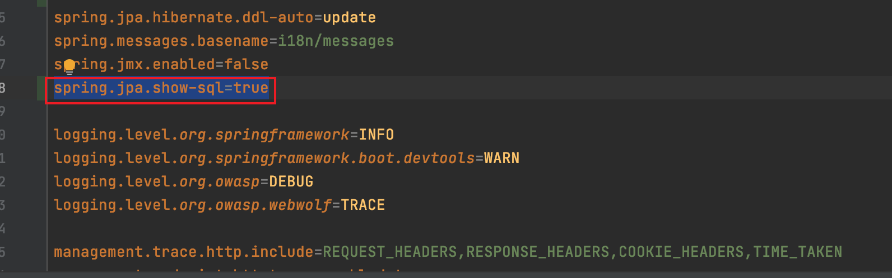

2.登录注册模块审计
1.登录功能
1.1.根据路由查找实现代码
登录接口为：/WebGoat/login
全局搜索/login查看相关代码：
定位到webgoat/WebSecurityConfig.java
可以看出该项目使用的是springSecurity框架，框架关键配置如下：
1 | protected void configure(HttpSecurity http) throws Exception { |
1 | auth.userDetailsService(userDetailsService); //.passwordEncoder(bCryptPasswordEncoder()); |
从数据库中读取用户进行身份验证：https://www.jianshu.com/p/c3b79a625d84
1.2. 跟进userDetailsService
userDetailsService为UserService的对象。跟进UserService类。
webgoat-container/src/main/java/org/owasp/webgoat/users/UserRepository.java
UserService继承JpaRepositoy。采用了jpa的方式，继承JpaRepository即可使用数据的增删改查。
此处的findByUsername，为自定义的简单查询。就是根据方法名来自动生成 SQL
springboot jpa使用方式讲解：Spring Boot(五)：Spring Boot Jpa 的使用 - 纯洁的微笑 - 博客园 (cnblogs.com)
1 | Spring Boot Jpa 是 Spring 基于 ORM 框架、Jpa 规范的基础上封装的一套 Jpa 应用框架，可使开发者用极简的代码即可实现对数据的访问和操作。它提供了包括增删改查等在内的常用功能，且易于扩展！学习并使用 Spring Data Jpa 可以极大提高开发效率！ |
1.3.跟进WebGoatUser类
@Entity注解可以确定该类为webgoat的用户实体类。
1.4.sql注入判断
登录接口设计到了数据库的查询等操作，自然想到了sql注入，但是有没有sql注入呢？
可以在配置文件中添加打印sql语句配置，在控制台查看输出。
webwolf/src/main/resources/application-webwolf.properties
添加：spring.jpa.show-sql=true

可以在test中执行测试用例来打印sql语句
webgoat-container/src/test/java/org/owasp/webgoat/users/UserRepositoryTest.java
可以看到执行的sql语句采用了预编译。所以此处就杜绝了sql注入。
关于springDataJpa的注入问题还发现了一篇很好的文章：
Java代审之SQL注入—SpringDataJpa-SecIN (sec-in.com)
作者给出了两个全局查找注入的搜索方式：
1.order by处无法使用预编译，可以搜索关键字：**JpaSort.unsafe()**
2.再一些复杂的业务场景中，自定义的sql无法满足业务需求，需要自己编写sql语句，此时就可能存在拼接sql语句，存在sql注入的风险。
可直接检索EntityManager的相关使用。
2.注册功能
2.1全局搜索注册路由/register
定位到webgoat-container/src/main/java/org/owasp/webgoat/users/RegistrationController.java
/registration路由会进入registration.html页面。
registration页面的输入会提交到register.mvc路由。
2.2 输入验证
输入的用户名和密码会进入webgoat-container/src/main/java/org/owasp/webgoat/users/UserValidator.java

判断输入用户名数据库中是否存在。第一次和第二次输入的密码是否相同。符合规则则进入
1 | userService.addUser(userForm.getUsername(), userForm.getPassword()); |
2.3添加用户到数据库
addUser():
1 | public void addUser(String username, String password) { |
createLessonsForUser():
1 | private void createLessonsForUser(WebGoatUser webGoatUser) { |
此处的sql语句可以构造用户名payload，进行堆叠注入
1 | test;select sleep(5); -- |
但是用户名有限制，只能输入字母和数据，判断正则如下[a-z0-9-]*：
1 |
|
暂时没想到绕过方式。
2.4 sql注入判断
注册功能的查询，添加，都是用的jpa规范，存在预编译。不存在注入。
添加用户之后会相应的为用户创造一个数据库，此处存在sql注入的风险，但是用户输入用户名存在限制，只能输入数字和字母。可能存在一定的绕过方式。
TODO
 alipay
alipay